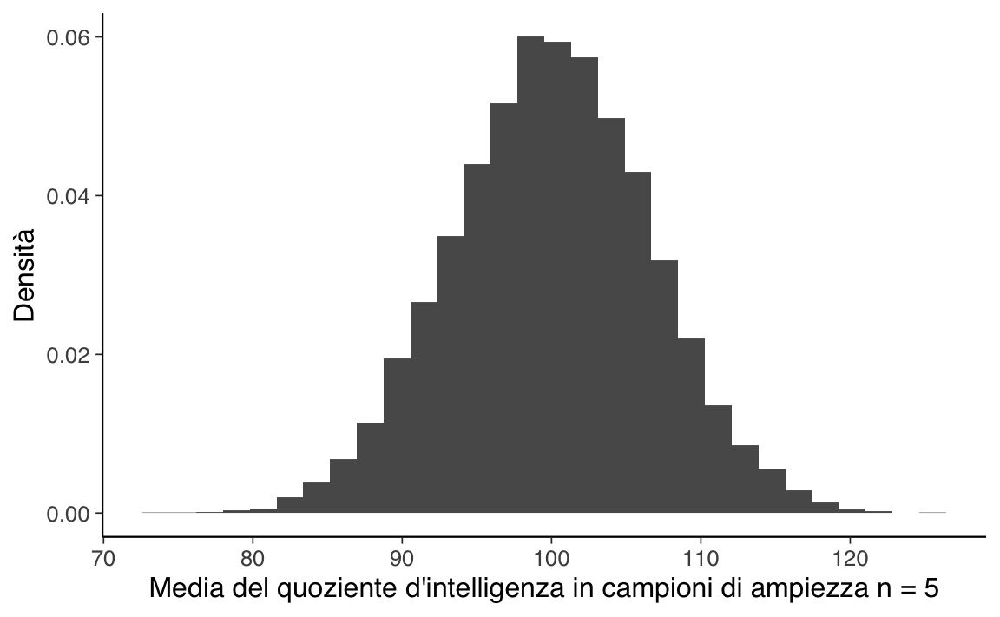

40 Distribuzione campionaria
Il problema che l’inferenza statistica si pone è quello di capire, sulla base di eventi osservati, quale possa essere la popolazione che li ha generati. L’approccio frequentista all’inferenza statistica è basato sull’idea di probabilità come limite a cui tende la frequenza relativa, al tendere all’infinito del numero delle prove effettuate. È dunque centrale all’approccio frequentista l’idea di una ripetizione dell’esperimento casuale i cui esiti definiscono l’evento di interesse.
Per fornire un’intuizione del tipo di metodi statistici di cui fa uso l’approccio frequentista, esamineremo qui un concetto cruciale di un tale approccio: quello di distribuzione campionaria.
40.1 Distribuzione campionaria
In precedenza abbiamo presentato la Legge dei grandi numeri.La Legge dei grandi numeri è uno strumento molto potente, ma non è sufficiente per rispondere a tutte le nostre domande. Tutto ciò che ci offre è una “garanzia a lungo termine”. Essa ci garantisce che, a lungo termine, le statistiche campionarie saranno corrette – le statistiche campionarie forniranno la risposta esatta se verrà raccolta una quantità infinita di dati. Ma come ha affermato John Maynard Keynes (1923) in economia, una garanzia a lungo termine è di scarsa utilità nella vita reale:
Il lungo periodo è una guida fuorviante per ciò che accade ora. Alla lunga saremo tutti morti. Gli economisti si sono dati un compito troppo facile, troppo inutile, se nelle stagioni tempestose possono solo dirci che, quando la tempesta sarà passata da un pezzo, l’oceano sarà di nuovo piatto.
Come in economia, così anche in psicologia e nella statistica. Non è sufficiente sapere che, a lungo termine, arriveremo alla risposta giusta. È di scarso conforto sapere che un campione di dati infinitamente grande ci fornisce il valore esatto della media della popolazione, quando il campione che possiamo ottenere in qualsiasi situazione pratica non può che avere una numerosità modesta. Nell’attività pratica della ricerca psicologica, quindi, è necessario sapere qualcosa di più del comportamento delle statistiche campionarie (per esempio, la media) quando esse vengono calcolate a partire da un campione di dati molto più piccolo di quello ipotizzato dalla Legge dei grandi numeri. Queste considerazioni portano l’approccio frequentista alla formulazione di un nuovo concetto: quello di distribuzione campionaria (sampling distribution).
La distribuzione campionaria di una statistica basata su \(n\) osservazioni è la distribuzione di frequenza dei valori che la statistica assume. Tale distribuzione è generata teoricamente prendendo infiniti campioni di dimensione \(n\) e calcolando i valori della statistica per ogni campione.
40.1.1 Simulazione
Tenendo a mente quanto detto nella sezione precedente, abbandoniamo l’idea che i nostri campioni siano in grado di raggiungere numerosità dell’ordine di grandezza delle decine o delle centinaia di migliaia di osservazioni. Prendiamo invece in esame una situazione più vicina a quella in cui gli psicologi si trovano ad operare. Consideriamo, quale esempio, un’ampiezza campionaria di \(n = 5\). Come in precedenza, possiamo simulare questo esperimento casuale in R, usando la funzione rnorm():
Il QI medio in questo campione risulta pari a 107.2. Non sorprende che questo risultato sia molto meno accurato rispetto all’esperimento casuale precedente.
Immaginiamo ora di replicare l’esperimento; immaginiamo cioè di ripetere nuovamente la procedura descritta sopra: estraiamo un nuovo campione casuale e misuriamo il QI di 5 persone. Ancora una volta utilizziamo R per effettuare la simulazione:
In quest altro campione casuale il QI medio è 113. Procediamo in questo modo e simuliamo l’esperimento casuale dieci volte in maniera tale da ottenere i risultati seguenti.
Iniziamo creando una lista di 10 campioni di ampiezza \(n = 5\).
Trasformiamo la lista in un data.frame.
df <- data.frame(matrix(unlist(sample_list), nrow=length(sample_list), byrow=TRUE))
df
#> X1 X2 X3 X4 X5
#> 1 92 97 123 101 102
#> 2 126 107 81 90 93
#> 3 118 105 106 102 92
#> 4 127 107 71 111 93
#> 5 84 97 85 89 91
#> 6 75 113 102 83 119
#> 7 106 96 113 113 112
#> 8 110 108 99 95 94
#> 9 90 97 81 133 118
#> 10 83 94 93 112 99Le medie di ciascuno dei 10 campioni di ampiezza \(n = 5\) sono:
rowMeans(df)
#> [1] 103.0 99.4 104.6 101.8 89.2 98.4 108.0 101.2 103.8 96.2Poniamoci ora il problema di replicare tante volte la procedura che ci porta a calcolare la media dei valori del QI di cinque persone prese a caso. Per ciascuna replica dell’esperimento casuale salviamo il valore della media campionaria. Così facendo, generiamo tanti valori, ciascuno dei quali corrisponde alla media di un campione casuale di 5 osservazioni. Usando i poteri magici di R, possiamo eseguire una tale simulazione mediante le seguenti istruzioni:
Nella Figura 40.1 sono riportati i risultati della simulazione. Come illustrato dalla figura, la media dei 5 punteggi del QI è solitamente compresa tra 80 e 120. Ma il risultato più importante di questa simulazione è quello che ci fa capire che, se ripetiamo l’esperimento casuale più e più volte, otteniamo una distribuzione di medie campionarie. Un tale distribuzione ha un nome speciale in statistica: si chiama distribuzione campionaria della media.
data.frame(sample_means) %>%
ggplot(aes(x = sample_means)) +
geom_histogram(aes(y = ..density..)) +
labs(
x = "Media del quoziente d'intelligenza in campioni di ampiezza n = 5",
y = "Densità"
)
La “distribuzione campionaria” è un importante concetto della statistica ed è fondamentale per comprendere il comportamento dei piccoli campioni. Quando abbiamo eseguito per la prima volta l’esperimento casuale relativo all’estrazione di cinque punteggi IQ dalla popolazione, abbiamo trovato una media campionaria pari a 101.4. Quello che impariamo dalla distribuzione campionaria delle medie di campioni di ampiezza \(n = 5\) della Figura 40.1 è che un tale esperimento casuale è poco accurato. Infatti, la distribuzione campionaria della media dei campioni di ampiezza \(n=5\) ci fa capire che, se ripetendo un tale esperimento casuale tante volte, otteniamo delle medie campionarie con valori che possono essere compresi nell’intervallo tra 80 e 120. In altre parole, la distribuzione campionaria della media di campioni di ampiezza 5 ci dice che il risultato dell’esperimento casuale (ovvero, la media osservata in un singolo campione) varia di molto tra i diversi campioni che possono essere estratti dalla popolazione. Di conseguenza, se il nostro obiettivo è quello di stimare la media della popolazione, allora non dobbiamo fidarci troppo del risultato ottenuto per caso da un singolo campione di numerosità \(n\) = 5. Nella discussione seguente mostreremo come sia possibile utilizzare la stima della distribuzione campionaria per descrivere le proprietà statistiche delle stime (ovvero, il grado di incertezza che è associato alle stime che otteniamo).
Si noti che, in generale, la distribuzione campionaria non è nota, poiché dipende dalle caratteristiche della popolazione e non solo dai dati osservati nel campione. In pratica, quindi, non possiamo mai conoscere le caratteristiche esatte della distribuzione campionaria di una statistica; tali caratteristiche possono solo essere stimate.
40.2 Distribuzione campionaria della media
Consideriamo ora l’inferenza statistica nel caso della statistica campionaria corrispondente alla media del campione. Denotiamo con \(\bar{X}_n\) la media calcolata su un campione di \(n\) osservazioni. Abbiamo detto che, ogni volta che osserviamo un nuovo campione di ampiezza \(n\), la statistica \(\bar{X}_n\) assumerà un valore diverso. In termini tecnici diciamo che \(\bar{X}_n\) è una variabile aleatoria, ovvero è una variabile che assume un nuovo valore ogni qualvolta l’esperimento casuale viene ripetuto (nel caso presente l’esperimento casuale corrisponde all’estrazione di un campione casuale dalla popolazione e al calcolo della media delle osservazioni campionarie). L’insieme dei valori che \(\bar{X}_n\) può assumere in tutti i campioni casuali di ampiezza \(n\) che possono essere estratti dalla popolazione è detto distribuzione campionaria della media.
40.2.1 Valore atteso della media campionaria
Qual è la media (valore atteso) della distribuzione campionaria della media? È facile mostrare che \(\mu_{\bar{X}_n}\) coincide con il valore medio \(\mu\) della popolazione da cui i campioni di ampiezza \(n\) sono stati estratti.
Ponendo \(\bar{X}_n = S_n/n\), dove \(S_n = X_1 + X_2 + \dots + X_n\) è la somma di \(n\) variabili aleatorie iid, ne segue che: \[ \mathbb{E}(\bar{X}_n) = \frac{1}{n} \mathbb{E}(S_n) = \frac{1}{n} \mathbb{E}(X_1 + X_2 + \dots + X_n ) = \frac{1}{n} n \mu = \mu. \]
40.2.2 Varianza della media campionaria
Qual è la varianza della distribuzione campionaria della media? Anche in questo caso si può facilmente mostrare come la varianza della distribuzione delle medie campionarie è legata alla varianza \(\sigma^2\) della popolazione dalla seguente relazione:
\[ var(\bar{X}\_n) = \frac{\sigma^2}{n}, \tag{40.1}\]
dove \(n\) è la numerosità dei campioni casuali.
Prima di presentare la dimostrazione dell’Equazione 40.1 è necessario ricordare la seguente proprietà della varianza: se una variabile aleatoria \(X\) viene moltiplicata per una costante \(a\), la varianza della variabile aleatoria \(aX\) diventa
\[ var(a X) = a^2 var(X). \]
Possiamo ora comprendere la dimostrazione seguente.
\[ var(\bar{X}_n) = \frac{1}{n^2} var(S_n) = \frac{1}{n^2} n \sigma^2 = \frac{\sigma^2}{n}. \]
I due risultati che abbiamo ottenuto sopra sono molto importanti. Il primo ci dice che la media campionaria è uno stimatore corretto (ovvero, non distorto) della media della popolazione. Il secondo quantifica l’errore medio che compiamo usando usiamo la media del campione quale stima della media della popolazione.
40.2.3 Errore standard
La radice quadrata della varianza della distribuzione campionaria della media si chiama errore standard della media campionaria. Questa è una quantità molto importante perché ci informa sul livello di incertezza della nostra stima fornendoci un valore che ha la stessa unità di misura delle osservazioni. Se vogliamo stimare la media della popolazione utilizzando la media del campione quale stimatore ci possiamo aspettare di compiere un errore medio pari a \(\frac{\hat{\sigma}_n}{\sqrt{n}},\) laddove \(\hat{\sigma}_n\) è la deviazione standard del campione utilizzata quale stima della deviazione standard della popolazione.
40.2.3.1 Simulazione
Per chiarire le due conclusioni precedenti, utilizziamo nuovamente la simulazione che abbiamo eseguito in precedenza, quando abbiamo generato 10000 medie campionarie per campioni di ampiezza \(n = 5\) estratti dalla popolazione \(\mathcal{N}(\mu = 100, \sigma = 15\)). La distribuzione di tali medie è rappresentata nella figura Figura 40.1). In realtà, quella fornita dalla Figura 40.1 non è esattamente la distribuzione campionaria delle medie di campioni casuali di ampiezza \(n=5\) estratti dalla popolazione \(\mathcal{N}(\mu = 100, \sigma = 15\)): la vera distribuzione campionaria della media si otterrebbe estraendo infiniti campioni di ampiezza \(n = 5\) dalla popolazione. Tuttavia, avendo a disposizione le medie di 10000 campioni, ci possiamo aspettare un risultato empirico non troppo diverso da quello teorico. Verifichiamo dunque le due conclusioni a cui siamo giunti sopra.
Sappiamo che la media delle 10000 medie di campioni di ampiezza \(n=5\) dovrà essere molto simile (anche se non identica, dato che il numero dei campioni è grande, ma non infinito) alla media della popolazione. Infatti, in questa simulazione, abbiamo che \(\hat{\mu}_{\bar{X}_n} =\) 99.97 contro un valore teorico \(\mu=100\). All’aumentare del numero di campioni estratti \(\mu_{\bar{X}_n}\) diventa sempre più simile a \(\mu\).
Calcoliamo ora la deviazione standard (detta errore standard) delle 10000 medie campionarie che abbiamo trovato. Nella simulazione, tale valore è pari a 6.663 mentre il valore teorico è \(\sigma_{\bar{X}} = \frac{\sigma}{\sqrt{n}} = \frac{15}{\sqrt{5}} = 6.708\). Possiamo dunque dire che, con 10000 medie campionarie le proprietà della distribuzione campionaria della media vengono approssimate molto bene.
Si noti che possiamo attribuire a \(\sigma_{\bar{X}}\) la stessa interpretazione che è possibile fornire, in generale, alla deviazione standard. Nel caso di un campione, la deviazione standard \(\sigma\) ci dice di quanto, in media, i valori osservati sono lontani dalla media. Nel caso della distribuzione campionaria delle medie dei campioni, \(\sigma_{\bar{X}}\) ci dice quale errore medio compiamo stimando \(\mu\) con \(\bar{X}\). In altre parole, ci dice che, se considerassimo tutte le medie \(\bar{X}\) che si possono calcolare sulla base degli infiniti campioni di dimensioni \(n\) che possiamo estrarre dalla popolazione, la distanza media tra ciascuna di queste medie e la media della distribuzione (che corrisponde alla media della popolazione) è pari a \(\sigma_{\bar{X}}\). La quantità \(\sigma_{\bar{X}}\) può dunque essere considerata come una misura di errore nella stima di \(\mu\) mediante \(\bar{X}\).
40.2.4 Distribuzioni delle statistiche campionarie
Qualunque statistica campionaria ha una sua distribuzione teorica. Consideriamo, ad esempio, il massimo del campione quale statistica campionaria di interesse. Ripetiamo la simulazione che abbiamo descritto sopra calcolando, questa volta, il valore massimo del campione.
I risultati di questa simulazione sono riportati nella Figura 40.2.
data.frame(sample_max) %>%
ggplot(aes(x = sample_max)) +
geom_histogram(aes(y = ..density..)) +
labs(
x = "Valore massimo del QI in campioni di ampiezza n = 5",
y = "Densità"
)Non dovrebbe sorprenderci che, prendendo 5 persone a caso per poi selezionare la persona con il punteggio QI più alto, otteniamo una distribuzione che, rispetto alla distribuzione della figura Figura 40.2), è traslata verso destra. Nella presente simulazione, la distribuzione del QI massimo di un campione casuale di ampiezza \(n = 5\) si situa approssimativamente nell’intervallo compreso tra 90 e 150.
40.3 Teorema del limite centrale
Chiediamoci ora quale sia la relazione che intercorre tra la distribuzione campionaria della media e l’ampiezza \(n\) dei campioni. In ciascun pannello della figura Figura 40.3 sono riportati i risultati di una simulazione nella quale sono stati generati 10000 campioni di ampiezza \(n\) per poi calcolare il QI medio in ciascun campione.
par(mfrow=c(2, 3))
mu <- 100
sigma <- 15
nrep <- 1e5
qi <- rep(NA, nrep)
get_mean <- function(nobs, mu, sigma) {
x <- round(rnorm(n = nobs, mean = mu, sd = sigma))
mean(x)
}
ymax <- 0.14
nobs <- 1
qi <- replicate(nrep, get_mean(nobs, mu, sigma))
hist(qi, freq=FALSE,
yaxt='n',
ylim=c(0, ymax),
xlim = c(40, 160),
ylab = "", xlab = "QI", main = "n = 1")
curve(dnorm(x, mean=mu, sd=sigma), add=TRUE, yaxt="n")
nobs <- 2
qi <- replicate(nrep, get_mean(nobs, mu, sigma))
hist(qi, freq=FALSE,
yaxt='n',
ylim=c(0, ymax),
xlim = c(40, 160),
ylab = "", xlab = "QI", main = "n = 2")
curve(dnorm(x, mean=mu, sd=sigma), add=TRUE, yaxt="n")
nobs <- 3
qi <- replicate(nrep, get_mean(nobs, mu, sigma))
hist(qi, freq=FALSE,
yaxt='n',
ylim=c(0, ymax),
xlim = c(40, 160),
ylab = "", xlab = "QI", main = "n = 3")
curve(dnorm(x, mean=mu, sd=sigma), add=TRUE, yaxt="n")
nobs <- 5
qi <- replicate(nrep, get_mean(nobs, mu, sigma))
hist(qi, freq=FALSE,
yaxt='n',
ylim=c(0, ymax),
xlim = c(40, 160),
ylab = "", xlab = "QI", main = "n = 5")
curve(dnorm(x, mean=mu, sd=sigma), add=TRUE, yaxt="n")
nobs <- 15
qi <- replicate(nrep, get_mean(nobs, mu, sigma))
hist(qi, freq=FALSE,
yaxt='n',
ylim=c(0, ymax),
xlim = c(40, 160),
ylab = "", xlab = "QI", main = "n = 15")
curve(dnorm(x, mean=mu, sd=sigma), add=TRUE, yaxt="n")
nobs <- 30
qi <- replicate(nrep, get_mean(nobs, mu, sigma))
hist(qi, freq=FALSE,
yaxt='n',
ylim=c(0, ymax),
xlim = c(40, 160),
ylab = "", xlab = "QI", main = "n = 30")
curve(dnorm(x, mean=mu, sd=sigma), add=TRUE, yaxt="n")
par(mfrow=c(1, 1))Gli istogrammi mostrano la distribuzione delle medie così ottenute, cioè ci forniscono una rappresentazione grafica della distribuzione campionaria della media al variare dell’ampiezza campionaria \(n\). I punteggi del QI sono stati ricavati da una distribuzione normale con media 100 e deviazione standard 15 e tale distribuzione viene visualizzata con una linea nera continua in ciascun pannello della figura Figura 40.3.
Quello che ci chiediamo è come varia la distribuzione campionaria della media in funzione dell’ampiezza del campione. Intuitivamente, conosciamo già parte della risposta. Se abbiamo a disposizione solo poche osservazioni, è probabile che la media campionaria sia abbastanza imprecisa: se ripetiamo l’esperimento casuale del campionamento e ricalcoliamo la media del campione, otteniamo una risposta molto diversa ad ogni ripetizione dell’esperimento casuale. Di conseguenza, la distribuzione campionaria della media comprenderà una gamma di valori molto grande. Invece, si ottengono risultati molto simili tra loro se ripetiamo l’esperimento del campionamento utilizzando campioni di grandi dimensioni. In questo secondo caso, la distribuzione campionaria includerà una gamma di valori delle medie molto minore che in precedenza. Questo andamento si può notare nei pannelli della figura Figura 40.3: l’errore standard della media campionaria diminuisce all’aumentare dell’ampiezza del campione.
Ciò che abbiamo descritto finora, tuttavia, riguarda solo un aspetto di quello che accade alla distribuzione campionaria di \(\bar{X}\) all’aumentare di \(n\). Gli esempi discussi finora erano relativi al caso di campioni casuali del QI. Poiché i punteggi del QI seguono approssimativamente una distribuzione normale, abbiamo assunto che anche la popolazione abbia una distribuzione normale. Tuttavia, si presentano spesso casi in cui la distribuzione della popolazione non è normale. In queste circostanze, cosa succede alla distribuzione campionaria della media? La cosa straordinaria è questa: non importa quale sia la forma della distribuzione della popolazione, all’aumentare della dimensione campionaria \(n\), la distribuzione di frequenza delle medie campionarie si approssima sempre più alla tipica forma a campana di una distribuzione normale.
Per farci un’idea di quello che succede, eseguiamo alcune simulazioni usando R.
# needed for printing
width <- 6
height <- 6
# parameters of the beta
a <- 2
b <- 1
# mean and standard deviation of the beta
s <- sqrt(a * b / (a + b)^2 / (a + b + 1))
m <- a / (a + b)
# define function to draw a plot
plot_one <- function(n, N = 50000) {
# generate N random sample means of size n
X <- matrix(rbeta(n * N, a, b), n, N)
X <- colMeans(X)
# plot the data
hist(
X,
breaks = seq(0, 1, .025), border = "white", freq = FALSE,
#col = ifelse(colour, emphColLight, emphGrey),
col = "gray",
xlab = "Media campionaria", ylab = "", xlim = c(0, 1.2),
main = paste("n =", n), axes = FALSE,
font.main = 1, ylim = c(0, 5)
)
#box()
axis(1)
# axis(2)
# plot the theoretical distribution
lines(x <- seq(0, 1.2, .01), dnorm(x, m, s / sqrt(n)),
lwd = 2, col = "black", type = "l"
)
}Consideriamo la distribuzione della popolazione rappresentata dall’istogramma riportato nella Figura 40.4. Confrontando l’istogramma triangolare con la curva a campana tracciata dalla linea nera risulta chiaro che la distribuzione della popolazione non assomiglia affatto a una distribuzione normale.
plot_one(1)In una prima simulazione, ho estratto 50000 campioni di ampiezza \(n=2\) da questa distribuzione e, per ciascuno di essi ho calcolato la media campionaria. Come si può vedere nella figura Figura 40.5, la distribuzione campionaria non è triangolare. Certamente non è Normale, ma assomiglia di più ad una distribuzione campanulare di quanto assomigli alla distribuzione della popolazione raffigurata nella figura Figura 40.4.
plot_one(2)Quando aumento la numerosità del campione a \(n=4\) la distribuzione campionaria della media si approssima abbastanza bene alla normale, Figura 40.6.
plot_one(4)Già con \(n=8\) l’approssimazione diventa molto buona, come indicato nella Figura 40.7).
plot_one(8)In altre parole, se la dimensione del campione non è piccola, allora la distribuzione campionaria della media sarà approssimativamente normale indipendentemente dalla distribuzione della popolazione! Questo comportamento della distribuzione campionaria di \(\bar{X}\) al variare di \(n\) viene descritto in maniera formale dal Teorema del limite centrale.
Siano \(X_1, X_2, \dots\) variabili aleatorie i.i.d., tutte con lo stesso valore atteso \(\mu\) e la stessa varianza \(\sigma^2\). Allora, \[\lim_{n \rightarrow +\infty} P\left(a \leq \bar{X}_n \leq b \right) = P(a \leq Y \leq b), \label{theo:tlc}\] dove \(Y \sim \mathcal{N}\left(\mu, \frac{\sigma}{\sqrt{n}}\right)\).
Il Teorema del limite centrale ci dice che, se vengono selezionati campioni sufficientemente grandi (tipicamente è sufficiente che \(n > 30\) purché il carattere osservato non sia troppo asimmetrico), allora la media campionaria \(\bar{X}\) di \(n\) variabili aleatorie indipendenti \(X_1, X_2, \dots\) converge in distribuzione ad una variabile aleatoria normale di media \(\mu\) e varianza \(\sigma^2/n\).
È altresì molto importante notare che, se le variabili di partenza \(X_1\), \(X_2\), …\(X_n\) sono esse stesse Normali, tutte con lo stesso valore atteso \(\mu\) e la stessa varianza \(\sigma^2\), allora il Teoremadel limite centrale è esatto. Ovvero per ogni \(n\),
\[ \bar{X}_n \sim \mathcal{N}\left(\mu, \frac{\sigma}{\sqrt{n}}\right). \]
Questa proprietà discende dal seguente teorema.
Se \(X_1, X_2, \dots, X_n\) sono \(n\) variabili aleatorie Normali tra di loro indipendenti, ciascuna con valore atteso \(\mu\) e varianza \(\sigma^2\), allora la variabile aleatoria \(X_1 + X_2 + \dots + X_n\) è a sua volta una variabile aleatoria Normale con valore atteso \(n \mu\) e varianza \(n \sigma^2\).
In conclusione, il Teorema del limite centrale ci consente di specificare completamente le proprietà della distribuzione campionaria di \(\bar{X}_n\).
Se la popolazione è normale, allora \(\bar{X}_n \sim \mathcal{N}\left(\mu, \frac{\sigma}{\sqrt{n}}\right)\) indipendentemente da \(n\).
Se invece la popolazione non è normale, allora la distribuzione di \(\bar{X}_n\) tende a \(\mathcal{N}\left(\mu, \frac{\sigma}{\sqrt{n}}\right)\) al crescere di \(n\).
Esaminiamo ora un esercizio in cui viene applicato il TLC.
Supponiamo di misurare un oggetto con una bilancia non molto precisa. Supponiamo inoltre che l’errore di misura \(E\) della bilancia si distribuisca in maniera Normale con media \(0\) e deviazione standard \(\sigma = 2\) grammi. Se l’oggetto considerato ha un peso uguale a \(w\), il peso osservato \(X\) sarà dato dalla somma del suo peso vero e l’errore di misurazione: \(X = w + E\). Dato che \(w\) è una costante, \(X\) seguirà la distribuzione normale con media \(\mathbb{E}(X) = \mathbb{E}(w + E) = w + \mathbb{E}(E) = w\) e varianza \(var(X) = var(w + E) = var(E) = 4\). Qual è la probabilità di ottenere una misurazione che non differisce di più di un grammo dal peso vero?
Dobbiamo trovare la probabilità
\[ \begin{aligned} P(-1 \leq X - w \leq 1) &= P\bigg(-\frac{1}{2} \leq \frac{X - w}{\sigma} \leq \frac{1}{2}\bigg)\notag\\ &= P\bigg(-\frac{1}{2} \leq Z \leq \frac{1}{2}\bigg)\notag \end{aligned} \]
ovvero
Considerando l’evento complementare, possiamo dunque dire che c’è una probabilità maggiore di \(0.6\) che la bilancia produca un valore che differisce di almeno un grammo dal peso vero.
Chiediamoci ora cosa succede se, invece di accontentarci di una singola misurazione, calcoliamo la media di \(n = 10\) misurazioni. In questo secondo caso,
\[ \begin{aligned} P\left(-1 \leq \frac{S_{10}}{10} - w \leq 1\right) &= P\bigg(-\frac{1}{\sqrt{4/10}} \leq \frac{\frac{S_{10}}{10} - w}{\sigma/\sqrt{10}} \leq \frac{1}{\sqrt{4/10}}\bigg)\notag\\ &= P\bigg(-\frac{\sqrt{10}}{2} \leq Z \leq \frac{\sqrt{10}}{2}\bigg)\notag \end{aligned} \]
ovvero
Considerando l’evento complementare, possiamo concludere che c’è una probabilità pari a solo 0.114 che la media di 10 misurazioni assuma un valore che differisce di più di un grammo dal peso vero. È dunque ovvio che le medie di misurazioni ripetute sono migliori delle singole misure.
40.4 Intervalli di confidenza
40.4.1 Parametri di un modello statistico
Nel gergo statistico, i parametri sono i valori sconosciuti che determinano un modello statistico. Si consideri il modello statistico \(Y \sim \mathcal{N}(\mu, \sigma)\). Il modello statistico precedente ci dice che \(Y\) è una v.a. distribuita come una normale di parametri \(\mu\) e \(\sigma\). Supponiamo che la \(Y\) sia il QI. In questo caso è facile capire cosa sono i parametri \(\mu\) e \(\sigma\). Quello del QI, infatti, è un caso particolare perché il test di intelligenza Wechsler Adult Intelligence Scale (WAIS) è stato costruito in modo tale da produrre dei dati che si distribuiscono in un modo noto: il QI segue la distribuzione normale di parametri \(\mu = 100\) e \(\sigma = 15\). In generale, però, i parametri di un modello statistico sono sconosciuti.
40.4.2 L’incertezza della stima
Dato che i parametri sono, in genere, sconosciuti, è necessario stimarli. Non è sufficiente, però, ottenere una stima puntuale di un parametro. È anche necessario quantificare l’incertezza della stima. L’incertezza della stima viene descritta dall’approccio frequentista nei termini di un intervallo di confidenza. L’intervallo di confidenza si costruisce mediante l’errore standard.
L’errore standard è la deviazione standard stimata della stima di un parametro e quantifica il grado della nostra incertezza sulla quantità di interesse. Chiariamo questa idea facendo riferimento alla la Figura 40.1. Tale figura riporta la distribuzione di un grande numero di medie campionarie, laddove la media di ciascun campione può essere considerata come una stima della media \(\mu\) della popolazione. La deviazione standard di queste stime, chiamata errore standard, ci fornisce una misura dell’incertezza della nostra stima. In altre parole, quantifica la variabilità dei valori delle stime del parametro \(\mu\) che sono calcolate sulla base di campioni diversi. Come abbiamo visto nella simulazione del TLC, l’errore standard ha la proprietà di diminuire all’aumentare della dimensione del campione.
L’errore standard viene utilizzato per calcolare l’intervallo di confidenza. L’intervallo di confidenza rappresenta un intervallo di valori di un parametro o quantità di interesse che sono approssimativamente coerenti con i dati, data la distribuzione campionaria presunta. All’intervallo di confidenza possiamo dunque assegnare la seguente interpretazione. Supponiamo che il modello statistico sia corretto e supponiamo di ripetere tante volte il processo di campionamento. Se per ogni campione estratto dalla popolazione calcoliamo una stima del parametro, allora gli intervalli di confidenza del 50% e del 95% includeranno il vero valore del parametro il 50% e il 95% delle volte.
Sotto l’ipotesi che la distribuzione campionaria segua la distribuzione normale, per campioni di grandi dimensioni l’intervallo di confidenza al 95% si costruisce nel modo seguente: \[ \text{stima del parametro} \pm 2 \text{ errori standard.} \] Dalla distribuzione normale sappiamo che una stima del parametro \(\pm\) 1 errore standard corrisponde ad un intervallo del 68% e una stima del parametro \(\pm\) \(\frac{2}{3}\) di un errore standard corrisponde ad un intervallo del 50%. Un intervallo del 50% è particolarmente facile da interpretare dato che il vero valore del parametro ha la stessa probabilità di essere incluso o escluso dall’intervallo. Un intervallo del 95% basato sulla distribuzione normale è circa tre volte più ampio di un intervallo del 50%.
Commenti e considerazioni finali
I risultati precedenti consentono le seguenti conclusioni. Se \(X_1, \dots, X_n\) è un insieme di variabili aleatorie i.i.d., tutte con media \(\mu\) e varianza \(\sigma^2\), allora \[ \mathbb{E}(\bar{X}) = \mu, \quad var(\bar{X}) = \frac{\sigma^2}{n}. \] Se le \(X_i\) seguono la distribuzione normale, ne segue che \(\bar{X} \sim \mathcal{N}(\mu, \sigma/\sqrt{n})\), in quanto qualunque combinazione lineare di variabili aleatorie Normali è ancora una variabile aleatoria Normale. Invece, se le \(X_i\) non seguono la distribuzione normale, il Teorema del limite centrale ci consente comunque di dire che \(\bar{X}\) tende a \(\mathcal{N}(\mu, \sigma/\sqrt{n})\) al crescere di \(n\). I risultati precedenti sono estremamente importanti perché specificano completamente la distribuzione della media campionaria e vengono utilizzati dall’approccio frequentista per l’inferenza sulla media di una popolazione.